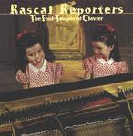

| Artist: | Rascal Reporters |
| Title: | The Foul Tempered Clavier |
| Label: | Pleasant Green Records PLGR004 |
| Length(s): | 61 minutes |
| Year(s) of release: | 2001 |
| Month of review: | [09/2001] |
| 1) | The White Bloodsheets | 2.15 |
| 2) | Seven Is A Long Time | 2.22 |
| 3) | Shoe Salad | 3.10 |
| 4) | Efrem Cymbalist Jr. | 4.36 |
| 5) | R.D.S. | 2.32 |
| 6) | Steve Kretzmer | 5.43 |
| 7) | Klezmer's Ragu | 2.23 |
| 8) | Son Of Steve Kretzmer | 5.12 |
| 9) | The Cymbalist | 9.40 |
| 10) | Sarahbella | 5.47 |
| 11) | Prisms | 2.25 |
| 12) | Tomorrow | 4.00 |
| 13) | My Name (bonus) | 0.55 |
| 14) | Ricky And His Dad (bonus) | 1.40 |
| 15) | Fresh Leather And Poultry Mix (bonus) | 5.30 |
| 16) | Over Triangle (bonus) | 3.32 |
Seven Is A Long Time is repetitive piece with a Latin feel, light and percussive, but still in proggy style with sound popping up from nowhere. A bit too merry and easy-going for me, and in fact the booklet states that this track is to off set all the complexities that are to come. Shoe Salad finds us in hectic marimbaland with remarkably quick playing (and as the booklet says: unsequenced). Plenty of ideas and lines jumbled together in only 3 minutes. Contrariness abounds, but the music continues to be light although some may find it all a bit too hectic, and at times even a bit Think of music for a comedy caper film where one is switched from one scene to the other in a matter of seconds.
On Efrem Cymbalist Jr. the band tried to test the limit of their software and such. They also test the listener to the limit I would think. Again shards of often quite dissonant music pieced together almost randomly. I am reminded a bit of David Bagsby here and for me it is all a bit much. Cartoon music. The final part brings back easy-listening with romantic tunes and flutes and all. Something different altogether.
It often happens that humour and experimentation go hand in hand, at least it seems to be that bands in the Canterbury scene and from the Cuneiform side of American prog, generally have the tendency to experiment and make fun of others or themselves. Rascal Reporters are not different when they first give us a "70's Progressive Rock" inspired drumsolo in R.D.S. and then continue with the song Steve Kretzmer (not written by himself though). From the booklet I gather that complicated things happen here, but I simply follow the music as it winds and winds (and winds). The song consists of a number of very melodic parts with weirdness in between. The music on this album continues to have a really jazzy feel, and not simply a jazzy feel, but kind of a good time feel. For some reason I have to think of Girl From Ipanema all the time. The music is really quite interesting, with some passages that sound like their semi-fluid (the Chinese sounding ones at the end)
A strong jazzy feel pervades Klezmer's Ragu and they are right: it does sound a bit like a tune for television. Not catchy enough for that mind you, but the sound is there.
Son Of Kretzmer is not a reprise. At first I was reminded of Present on this track with its menacing urgency. Waywardness rises again in this track. Although, in this kind of music I prefer a bit of power and energy and simply complexity, I have to admit it does have something. And if they throw in even some sixties sounding pop jolliness, welll, what can I say?
Listening to the long The Cymbalist I have to admit it though: they cna be quite tiresome as well. This is not to say the song does not have its moments, but I do not like this stop-and-start music. They are even citing a bit of classical music here and there and at some point they almost move into a familiar sounding television tune and some parts seem to be based on Genesis' the Lamb. Coincidence? I have no idea. Then some Ravellish stuff, but never for long. The song ends with a rather mellow passage (think late Kitaro here). Quite bombastic and quite a beautiful melody actually.
Sarahbella finds the saxophone player wringing out his sax over many signature changes, think Henry Cow and such here. Still the music is not as harrowing as you might think, even a bit danceable. Not what I expected. The final part is soft spoken again, but the music does seem to pick up pace. What am I thinking of now? New Orleans, a music band playing and walking in the street.
At the end the band goes for a melancholy pop song and I really like it. The sixties influence shine through, especially the dark Yesterday.... with the sole horn is really good. A plaintive song.
The four bonus tracks then. The first two are form a deleted single (which then has a total length of ehm..calculate...calculate 2.45. Weird stuff with alternating vocals and a few notes on piano on the first of them, the second is a hammered piece with again some weird vocals.
More melody is to be found on the rhythmic Fresh Leather And Poultry Mix. Like on most of the other tracks, the sounds used from keyboards and piano sound quite warm, that warm, round Canterbury sound. Over Triangle is back to business of stop-and-start again.